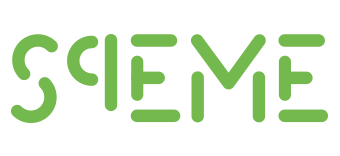

De bedrijfsprocessen heb ik geanalyseerd en uitgewerkt samen met mijn groepsgenoten Luuk van der Voort en Nick van Oostrum. We hebben de van ICR3ATE beschreven en ontworpen aan de hand van de 4 vensters van SqEME.
Het bedrijf ICR3ATE en de processen binnen deze organisatie willen wij met behulp van de vier vensters van het SqEME-model (SqEME, z.d.) uitwerken. SqEME onderscheidt de volgende 4 vensters:
Het basisprincipe achter de SqEME methode is dat een organisatie primair een bundeling van processen is waar gedreven professionals uitvoering aan geven. Deze professionals leveren resultaten op basis van hun vakmanschap, goede informatievoorziening en praktische hulpmiddelen. Wij zullen de SqEME methode koppelen aan ons projectbedrijf ICR3ATE.
Constitutie venster
De Constitutie van een organisatie gaat om de morele en levensbeschouwelijke uitgangspunten, welke waarden er binnen de organisatie gehanteerd worden en welke individuele mensen in de organisatie zitten (SqEME, z.d.).
Binnen het Constitutievenster is het belangrijk om te kijken wat het idee achter het bestaan van een organisatie is. Het primaire doel van ICR3ATE is bedrijven,
organisaties en professionals te helpen met het innoveren door het ontwikkelen van baanbrekende prototypes (ICR3ATE, z.d.-a). Nauwe samenwerking met de opdrachtgevers staat hierbij centraal. Op de website van ICR3ATE geven zij aan dat alles bij hen draait om innovatie, technisch inzicht én teamwork.
Een flexibele groep die zowel op kantoor als thuis kan werken zorgt ervoor dat ideeën gematerialiseerd worden. Dit team bestaat uit IoT experts, ontwikkelaars, consultants en een projectleider.
Op de vaak gestelde vragen pagina (ICR3ATE, z.d.) geeft ICR3ATE extra informatie over hun ethiek en de kenmerken van de organisatie. Met behulp van intensieve samenwerking met opdrachtgevers en co-creatie werkvormen wil ICR3ATE uitdragen dat zij er alles aan doen om ontwikkelbudget voor innovaties doeltreffend aan te wenden. Door continu te overleggen, resultaten voor te leggen en bij te schakelen probeert ICR3ATE het prototype zo goed mogelijk vorm te geven. ICR3ATE laat ook zien dat zij vertrouwen erg belangrijk vinden door Intellectueel Eigendom van een uitvinding bij de opdrachtgever te laten onderbrengen. In de opdrachtovereenkomst wordt er vastgelegd of ICR3ATE of de opdrachtgever het Intellectueel Eigendomschap van een uitvinding zal krijgen. Daarnaast biedt ICR3ATE de mogelijkheid voor wederzijdse NDA’s, waarom zij hun klanten kunnen verzekeren van geheimhouding van informatie.
Eigen ervaring met ICR3ATE
Tijdens ons project bij ICR3ATE hebben wij meegekregen hoe er bij ICR3ATE gewerkt wordt.
Centraal in de bedrijfscultuur staan hard werken, humor, openheid en goede communicatie. Iedereen is welkom bij ICR3ATE. Recent is een medewerker van ICR3ATE
het land uitgezet omdat zijn werkvisum afgelopen was. Via LinkedIn hebben wij gezien dat Manfred van der Voort lobbyt voor gemakkelijkere wetgeving m.b.t. het verlengen van werkvisa.
Wij vonden het mooi om te zien dat Manfred van der Voort zo veel moeite doet voor zijn medewerkers. De medewerkers van ICR3ATE overleggen vaak. Manfred van der Voort, de oprichter van ICR3ATE,
wordt continu up-to-date gehouden over de verschillende projecten die binnen ICR3ATE uitgevoerd worden.
Chemievenster
Het Chemievenster gaat over hetgeen dat de organisatie in beweging zet en houdt.
Hiermee wordt de samenwerking tussen de mensen en organisaties bedoeld.
Door dit venster wordt er inzicht verkregen in de interactie tussen mensen in en buiten
de organisatie. Waar komt de energie vandaan en wat is de relatie met de omgeving (SqEME, z.d.)?
ICR3ATE (z.d.-a) “doet niets liever dan bedrijven, organisaties en professionals helpen bij het innoveren door de ontwikkeling van baanbrekende prototypes”. De mensen bij ICR3ATE hebben een passie voor het ontwikkelen van innovatie door middel van techniek en ICT. Uit deze passie en de drang om nieuwe dingen te ontwikkelen halen ze veel energie. Doordat nieuwe ICT producten zich snel opstapelen moet de organisatie in beweging blijven om deze nieuwe ICT producten te kunnen gebruiken, continu leren is hier van belang.
De team van ICR3ATE bestaat uit een flexibele groep van IoT experts, ontwikkelaars, consultants en een projectleider. Manfred is zowel de eigenaar als technisch directeur, hij heeft dus een behoorlijke machtspositie binnen ICR3ATE. Manfred geeft aan dat hij het niet puur voor het geld doet maar echt passie heeft voor innovaties, hiermee probeert hij zijn personeel te inspireren. Het personeel werkt normaliter op het kantoor van ICR3ATE en er wordt dan ook veel samengewerkt aan projecten.
ICR3ATE heeft veel verschillende partners, namelijk NVIDIA, StartupDelta, Smart Industry, Fluctus, FME, Stichting ICT Valley, I3B, Knooppunt techniek, GODAN en de ICT Campus regio Foodvalley. Door de vele samenwerkingen probeert ICR3ATE betrokken te zijn bij pre-releases en bèta versies die vaak nog niet beschikbaar zijn voor de markt. Door dit te doen kunnen ze de concurrentie een stap voor zijn en de klanten van ICR3ATE laten mee profiteren (ICR3ATE, z.d.-b). Daarnaast heeft ICR3ATE ook nog een samenwerkingsverband met de minor Smart Industry van de Hogeschool van Arnhem en Nijmegen. Door deze minor staat ICR3ATE direct in verbinding met young professionals en kunnen ze hun kennis laten maken met het bedrijf ICR3ATE en het vak dat ze uitoefenen.
Constructie venster
Welke middelen worden er gebruikt om hetgeen uit het constitutie- en chemie venster te realiseren? Dat is waar het constructie venster over gaat.
Alle concrete hulpmiddelen die nodig zijn om de operatie vorm te geven. Constructie gaat ook om de inzet van mensen (SqEME, z.d.)
Zoals eerder genoemd bestaat het team van ICR3ATE uit IoT experts, ontwikkelaars, consultant en projectleider (ICR3ATE, z.d.-a). Dit team is gehuisvestigd in Ede. Hier hebben zij een multidisciplinair lab (ICR3ATE, z.d.-c). Dit lab is verdeeld in drie delen: elektronica, software en mechanica.
Het ontwikkelproces van ICR3ATE ziet er als volgt uit:
1. Ideation
Tijdens een open kennismakingsgesprek verkennen we met elkaar de mogelijkheden om samen te werken. We zijn benieuwd naar je idee
en de toegevoegde waarde die jouw dienst of product de markt moet gaan bieden. Dit intakegesprek is kosteloos en van beide kanten vrijblijvend,
maar we nemen het net als jij wel bloedserieus.
2. Specification
Bij deze stap maken we een functionele beschrijving van wat er minimaal nodig is om een goed werkend prototype te ontwikkelen (MVP). We kunnen nu beter inschatten hoeveel
tijd en geld het gaat kosten om het gewenste prototype te ontwikkelen.
3. Prototyping
Na verschillende sessies hebben we genoeg input om het prototype te ontwikkelen. We duiken ons multifunctionele lab in en gaan aan de slag. Als opdrachtgever
kun je kiezen voor co-makership of opereren vanuit de opdrachtgeversrol.
4. Manufacturing
Als het prototype is opgeleverd heb je iets in handen om richting potentiële financierders te stappen. Als de eerste release goed wordt ontvangen, helpen wij met het schalen van het prototype.
Correspondentie venster
In het correspondentie venster wordt er gekeken naar hoe de organisatie functioneert op basis van meetbare objectieve informatie.
In dit venster wordt er gekeken of zaken lopen zoals gepland, verwacht of wenselijk (SqEME, z.d.). Dit venster is belangrijk omdat vanuit deze beelden
initiatieven ontstaan voor verbetering.
ICR3ATE maakt geen gebruik van een management informatie systeem, dit komt omdat het een kleine organisatie is. Vooralsnog lukt het Manfred van der Voort om het overzicht te bewaren. Daarnaast kunnen dit soort systemen erg duur zijn en komen deze beter tot hun recht in grotere bedrijven. Vanwege de grote van ICR3ATE heeft een dergelijk systeem niet genoeg toegevoegde waarde. Vooraf aan projecten maakt ICR3ATE een korte plan van doen. In dit plan van doen wordt besproken wat er gedaan gaat worden, hoe dit gedaan gaat worden, wat de kosten zijn en wat er binnen de scope valt. Door dit vooraf duidelijk op te stellen probeert ICR3ATE het beoogde doel van het project goed in kaart te brengen zodat het resultaat vergeleken kan worden met het beoogde doel en hierop gereflecteerd kan worden.
Wanneer begonnen wordt aan een project maakt ICR3ATE gebruik van deskresearch, maar wat ze het allerbelangrijkste vinden zijn praktijkvoorbeelden en hun eigen ervaring. De eigen ervaring gaat vaak ook gepaard met een onderbuikgevoel over hoe iets moet en of iets succesvol kan worden afgerond.
ICR3ATE heeft net zoals alle andere organisaties in 2020 last gehad van de corona crisis. Medewerkers mochten maar beperkt aanwezig zijn op het kantoor of in de werkplaats, wat voor enige vertraging heeft gezorgd bij een aantal projecten. Daarnaast werden er aan het begin van de corona crisis minder projecten aangevraagd dan voorheen, hierdoor hebben zij aan het einde van 2020 een aantal maanden heel hard gewerkt om het bedrijfsresultaat weer recht te trekken.
Een ander probleem van het afgelopen jaar was de late levering van pakketjes en het verdwijnen van pakketjes. Deze pakketten met veelal elektronische componenten, zorgden ervoor dat sommige projecten niet op tijd afgerond konden worden.
Literatuurlijst
ICR3ATE. (z.d.). Frequently asked questions. Geraadpleegd op 18 oktober 2020, van https://icr3ate.nl/frequently-asked-questions-faq/
ICR3ATE. (z.d.-a). Ons bedrijf. Geraadpleegd op 18 oktober 2020, van https://icr3ate.nl/ons-bedrijf/
ICR3ATE. (z.d.-b). Onze partners. Geraadpleegd op 18 oktober 2020, van https://icr3ate.nl/partners/
ICR3ATE. (z.d.-c). Multidisciplinair lab. Geraadpleegd op 18 oktober 2020, van https://icr3ate.nl/multidisciplinair-lab/
SqEME. (z.d.). Principes voor succesvol procesmanagement [foto]. Geraadpleegd op 11 januari 2021, van https://www.sqeme.org/